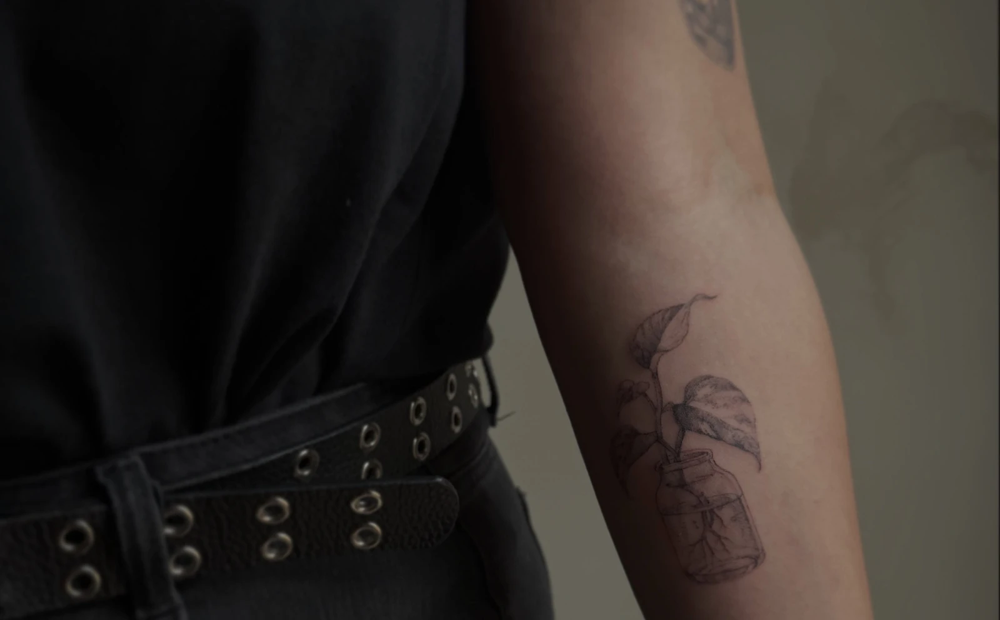
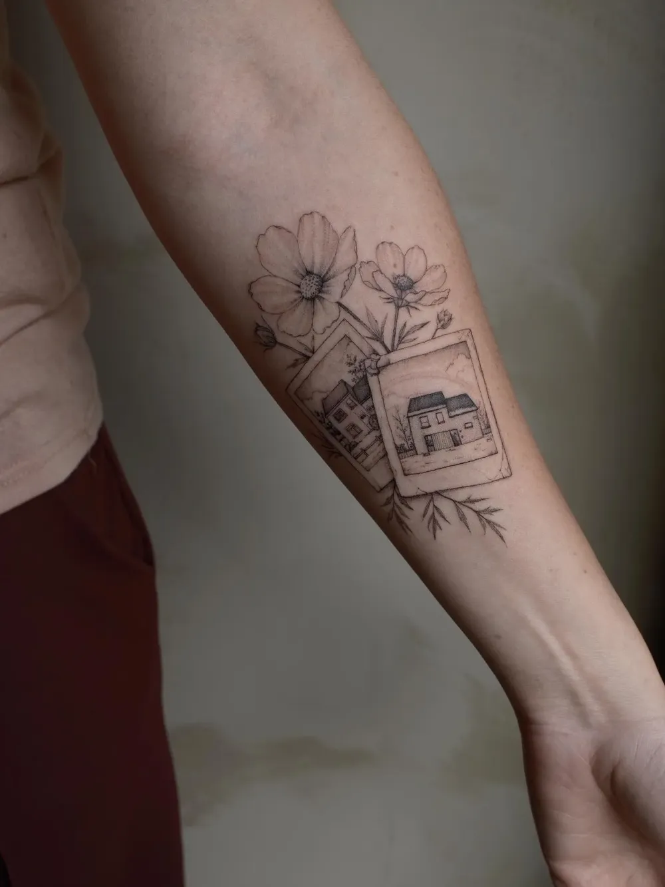
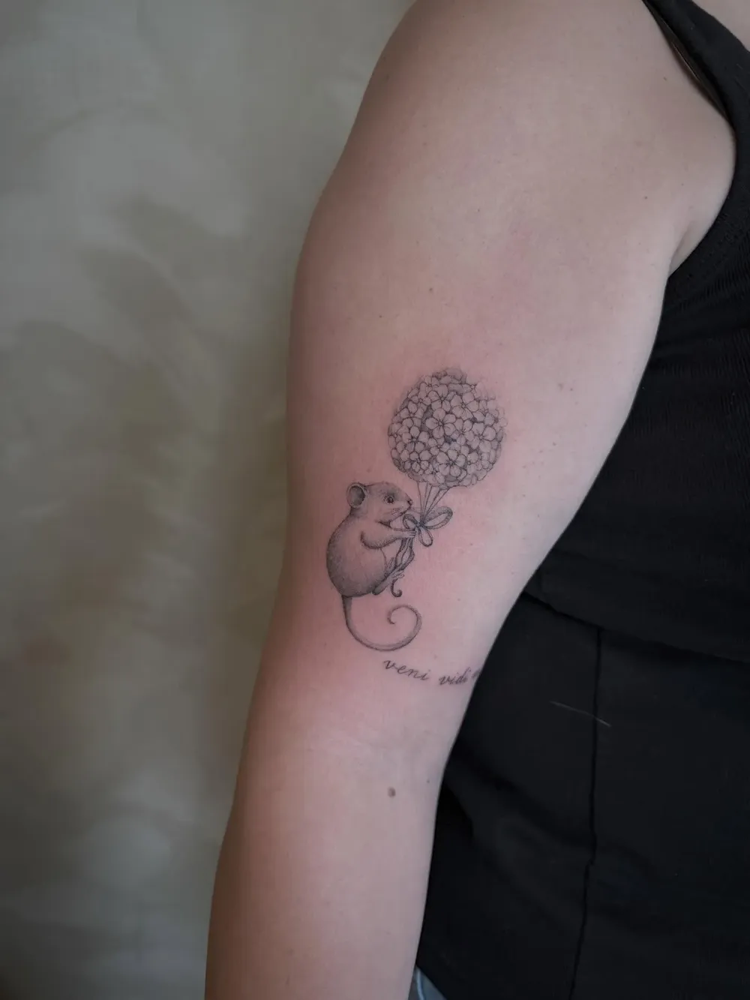
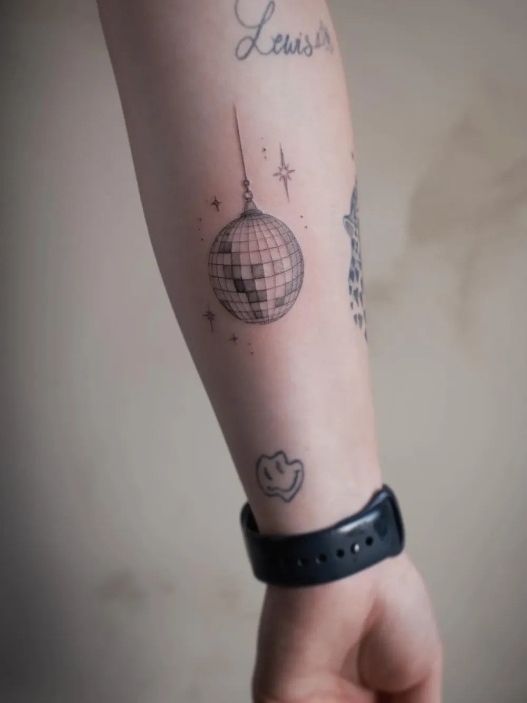
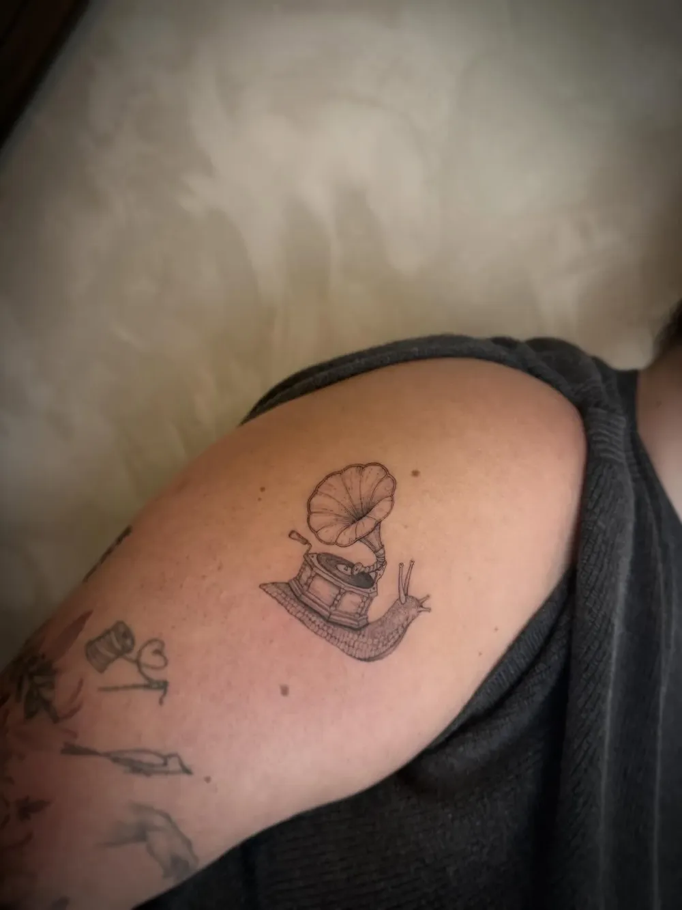
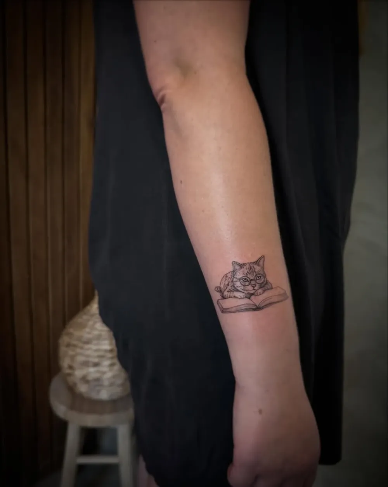
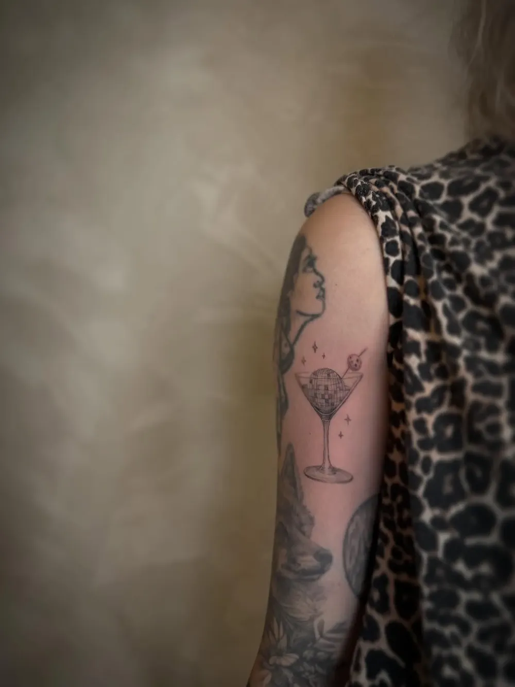
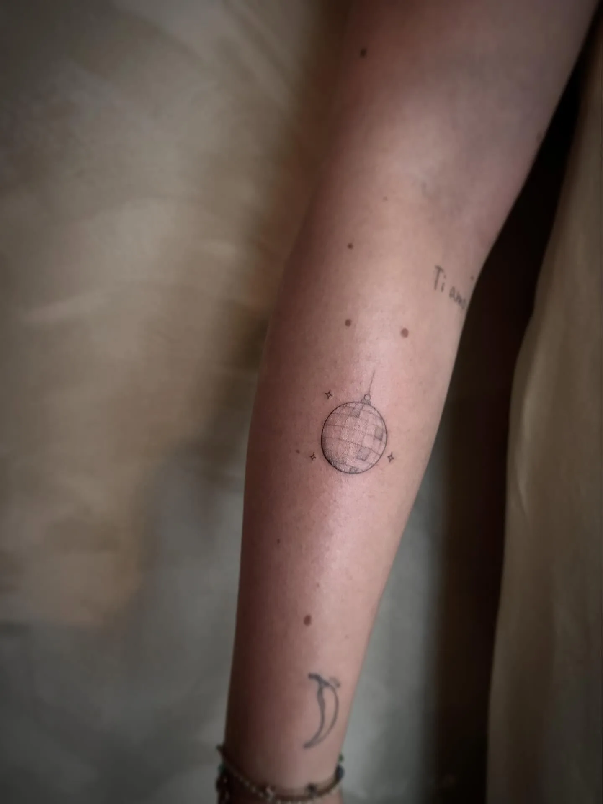

"Vriendelijke dame met kennis van zaken die me een ontzettend mooie eerste tattoo plaatste. Ze nam alle tijd, was vlot bereikbaar en niets was teveel. Echt wel een topper in het fijne werk."

Fine line tattoo · Diest
Fijne lijnen. Rustig gezet.
Ik ben Melissa. Sinds 2016 tattoo ik voltijds, nu in mijn eigen privéstudio. Bloemen, botanisch werk en kleine details, met de tijd die ze nodig hebben.
4,7★★★★★31 reviews op Google
Fine lineSingle needleMicrorealism
Recent werk
Klein, fijn en net iets anders.
Een muisje met een boeket, een slak met een grammofoon, een orka die rond de arm zwemt. Alles uit de laatste maanden, gefotografeerd tegen de leemmuur in de studio.











A little warped because it wraps around the arm.
Over de discobal. Een arm is geen blad papier.
Een afspraak maken
Berichten met "ik wil een tattoo" beantwoord ik niet.
Niet uit onvriendelijkheid, wel omdat ik er niets mee kan. Hoe meer je me vertelt, hoe sneller we kunnen starten. Ik werk rustig en neem bewust tijd voor elke aanvraag, dus een antwoord kan even duren.
Open een mail met alles erinJe mailt je idee
Met referentiefoto's, de plek op je lichaam, de grootte en een paar data die voor jou passen. Afspraken maak ik enkel via mail.
info@tattoostudiozwart.beJe betaalt een voorschot
Naargelang de grootte van je project € 50 of € 100. Het wordt verrekend bij je laatste sessie en blijft een jaar geldig.
72 uur op voorhand ligt je ontwerp vast
Kleine aanpassingen kunnen altijd, het moet 100% bij je passen. Maar je vroeg een beer en 24 uur voor de afspraak wil je toch een wolf? Dat lukt dan niet meer.
De dag voordien krijg je het adres
Je komt bij mij in een rustige privésetting. Kreeg je het adres niet? Herinner me er gerust even aan.
De dag zelf
Eet goed op voorhand en drink 24 uur ervoor geen alcohol. Een steun meebrengen mag, die wacht in de wachtruimte. Betalen kan cash of via de app.

Een fijne tattoo kan een beetje vervagen. Dat maakt ze ook zo fijn.Melissa
Eerlijk over fine line
Fijn blijft fijn. Ook als het geneest.
Een fijne lijn staat er de eerste dag scherp, zoals op de foto's die je online ziet. Eens genezen kan ze een beetje vervagen. Wil je een tattoo die er altijd heel duidelijk staat, kies dan voor iets dikkere lijnen. Dat zeg ik liever op voorhand.
Gratisbijwerken van vervaagde lijnen binnen 2 maanden
€ 50bijwerken na 2 maanden
vanaf € 100bijwerken na 12 maanden
Hoe verzorg ik mijn tattoo?+
Was eerst je handen, maak je tattoo schoon met lauw water en aangepaste zeep, dep droog en smeer dun in met cicaplast. De eerste 4 dagen om de 4 uur als het kan, daarna minstens 's ochtends en 's avonds. Niet te dik: je huid moet kunnen ademen.
Hoe lang duurt het genezen?+
Voor een fine line tattoo ongeveer 1 à 2 weken, dat verschilt van persoon tot persoon. Je tattoo is genezen als je geen korstjes of velletjes meer voelt als je er met je vingers over gaat.
Wat liever niet in die eerste weken?+
Niet zwemmen, geen bad of sauna, niet langer dan 5 minuten douchen. Geen felle zon of zonnebank, en niet krabben, ook al jeukt het. Daarna: factor 50 als je in de zon gaat.
Is dikker maken ook een bijwerking?+
Nee. Lijnen dikker maken of iets toevoegen is een nieuwe afspraak, geen gratis bijwerking.
Van Studio Zwart naar Noa Mori
Minder druk. Meer rust. Zelfde fijne lijnen.
Wat begon als een droom groeide uit tot een studio in het centrum van Diest. Het creatieve gaf me energie, maar het drukke en het administratieve van een openbare studio vraten stilaan aan mijn rust.
Daarom koos ik voor een intieme privéstudio. Terug naar de essentie: ontwerpen met zorg, tattooeren met liefde en ruimte voor echte connectie. Een plek waar jij én ik ons goed voelen.
2016voltijds tattoo-artiest
2020eigen studio: Studio Zwart
2025privéstudio: Noa Mori
Noarust of beweging in het Hebreeuws, liefde of genegenheid in het Japans
Moribos, in het Japans. Natuur, stilte, een plek waar dingen mogen groeien


4,7
★★★★★31 reviews op Google
"Melissa is een lieve, rustige dame die haar werk met veel passie uitvoert. Ze zoekt samen met jou naar het ontwerp zoals jij dit het liefste wilt."
"Zeer fijne tattoo's, het volste vertrouwen, super tevreden, precies zoals we het voor ogen hadden. Wij komen heel graag terug voor een 3de keer."
Contact
Vertel me je idee.
Vrije data zet ik op mijn Instagram-verhaal. Wil je iemand verrassen? Een cadeaubon kan ook, per mail of om af te halen.
Enkel op afspraakPrivéstudio in DiestGeen bancontact: cash of via de appVanaf 18 jaar
Zet dit in je mail
- Je idee, liefst met referentiefoto's
- De plek op je lichaam en de grootte
- Een paar data, of je vaste vrije dag